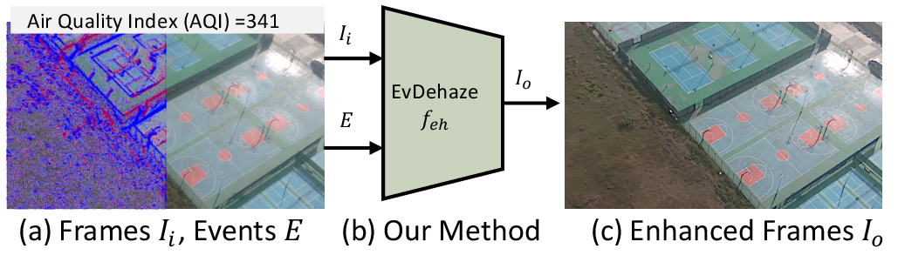
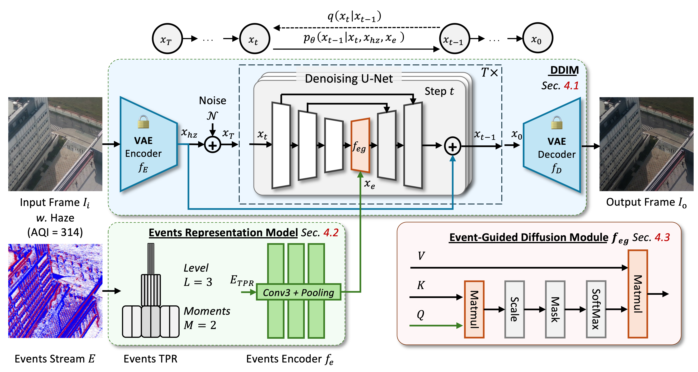
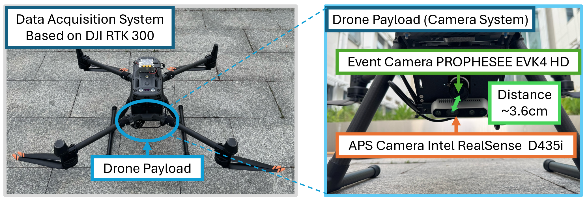
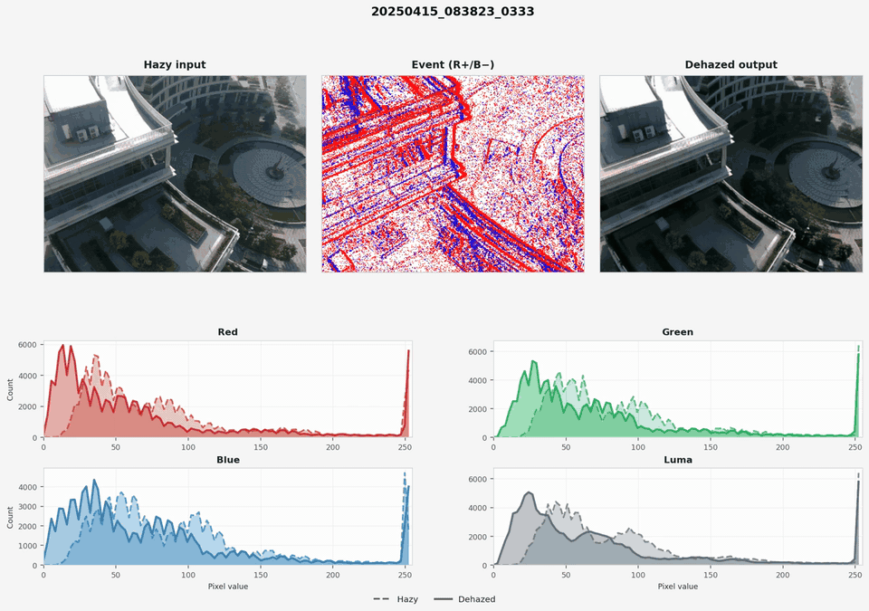
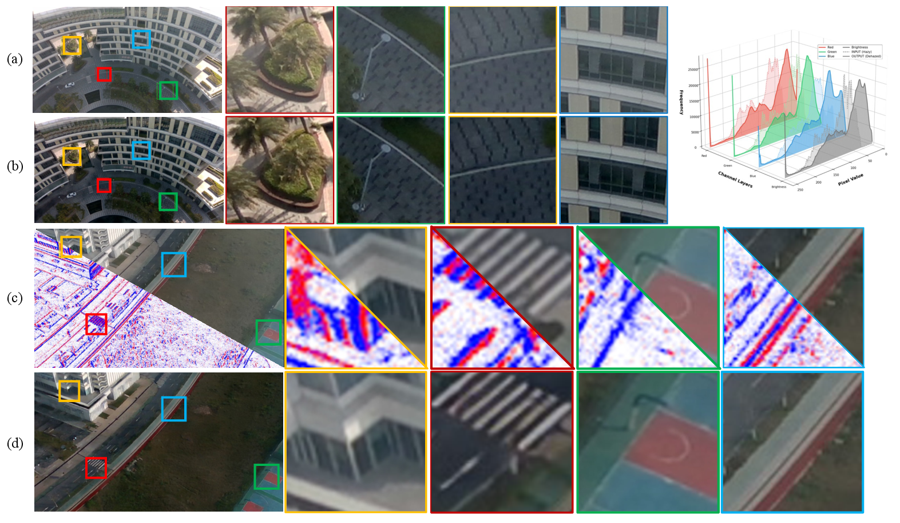

CVPR 2026
From Events to Clarity
The event-guided diffusion framework for dehazing. EvDehaze uses high dynamic range event cues to recover structure, contrast, and temporal detail from hazy dynamic scenes.

Abstract
Event cameras reveal the signal that haze hides from frames.
Conventional RGB dehazing struggles when scattering removes scene structures and illumination details. EvDehaze introduces event cameras into dehazing and treats restoration as event-conditioned generation, injecting event-derived edge and illumination features into a latent diffusion model.
Why Events
Events offer high dynamic range sensing and microsecond temporal precision. Under dense haze, they provide sparse but reliable motion, edge, and contrast cues that complement low-contrast RGB frames.
What EvDehaze Adds
The framework aligns hazy RGB frames with temporal event representations, then guides DDIM denoising through cross-attention so the model can restore natural contrast and sharper structures.
Method
RGB restoration steered by event-conditioned diffusion.
EvDehaze keeps the image-generation strength of latent diffusion while adding event guidance at the feature level.

Dataset
Real RGB-event haze captures from an airborne platform.
The dataset uses synchronized RGB and event sensors mounted on a UAV to record outdoor scenes under heavy haze. Synthetic RGB-event data is also generated from RESIDE/SOTS for supervised training and evaluation.

Results
Sharper structures and stronger real-world contrast.
Qualitative panels show hazy input, event visualization, EvDehaze output, and histogram comparisons on real UAV captures.

Real-World Visualization
Event cues emphasize scene boundaries and illumination changes that are weak in RGB-only observations, helping the diffusion sampler recover cleaner perceptual structure.
{kind=link}

| Method | Diffusion | SOTS PSNR | SOTS SSIM | SOTS LPIPS | NH-HAZE PSNR | NH-HAZE SSIM | NH-HAZE LPIPS | Params |
|---|---|---|---|---|---|---|---|---|
| IR-SDE | Yes | 33.82 | 0.984 | 0.014 | 12.59 | 0.520 | 0.361 | 537.21M |
| ResShift | Yes | 29.06 | 0.950 | 0.017 | 16.26 | 0.625 | 0.327 | 114.65M |
| EvDehaze | Yes | 34.12 | 0.986 | 0.012 | 18.43 | 0.637 | 0.313 | 122.68M |
Citation
Reference
Please cite EvDehaze if this project is useful for your research.
@inproceedings{wang2026events,
title={From Events to Clarity: The Event-Guided Diffusion Framework for Dehazing},
author={Wang, Ling and Lu, Yunfan and Ma, Wenzong and Yao, Huizai and Li, Pengteng and Xiong, Hui},
booktitle={Proceedings of the IEEE/CVF Conference on Computer Vision and Pattern Recognition},
pages={34028--34039},
month={June},
year={2026}
}